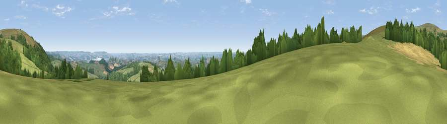

Viewpoint near Buckland in the Moor
#5077 in England · top 9% of its area beats it · near Buckland in the Moor · access?Where it is
The exact computed spot (SX 75300 73450). Click the marker for map links.
Public access: no public right of way or access land is recorded at this exact spot — it may be on private land. Computed from Natural England's CRoW access layer and OpenStreetMap rights of way — not the legal definitive map. Always verify locally.
The view, rendered

A 360° render of this exact spot computed from the terrain model, tree cover and land cover — summer colours, afternoon light, calibrated against photographs of famous viewpoints. Real trees, hedges and buildings will differ in detail.
The panorama
Grey silhouette: terrain skyline in each direction (720 bearings, Earth curvature and refraction included). Dashed green: skyline with trees (+15 m) and buildings (+8 m) as obstacles. Blue strip: how far the ground is visible on each bearing.
Where the view opens
Wedge length = distance to the farthest visible ground on that bearing (vegetation-aware). Rings at 10, 25 and 50 km.
What fills the view
62% grassland · 26% woodland · 11% cropland ·
Angular shares of the visible panorama (visual magnitude), not map area. Landscape diversity 0.42 (0–1 Shannon).
Key numbers
More beautiful places nearby
The staircase of upgrades: each row has a higher view potential than everything closer. Driving times are estimates from straight-line distance, calibrated against real road routing — check an actual route before setting out.
| Place | Direction | Drive | Score |
|---|---|---|---|
| Viewpoint near Buckland in the Moor | NW · 0 km | ~2 min | 72.4 |
| Viewpoint near Haytor Vale | NNE · 1 km | ~4 min | 79.1 |
| Viewpoint near Buckland in the Moor | WSW · 2 km | ~5 min | 80.7 |
| Beacon Hill | SE · 15 km | ~28 min | 82.3 |
| Viewpoint near Stokeinteignhead | E · 18 km | ~31 min | 84.1 |
| Viewpoint near Hope | S · 35 km | ~54 min | 84.4 |
| High Peak | ENE · 37 km | ~56 min | 85.3 |
| Pencarrow Head | WSW · 64 km | ~87 min | 86.0 |
50.54748, -3.76142 · source: screening · position refined by local search. Computed location — check access rights before visiting.